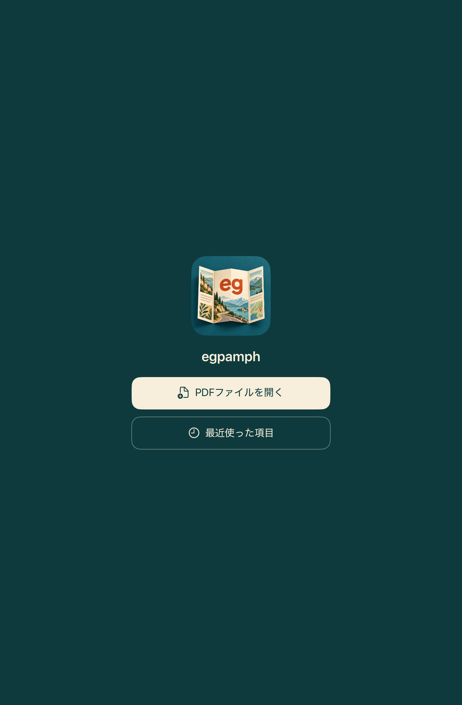
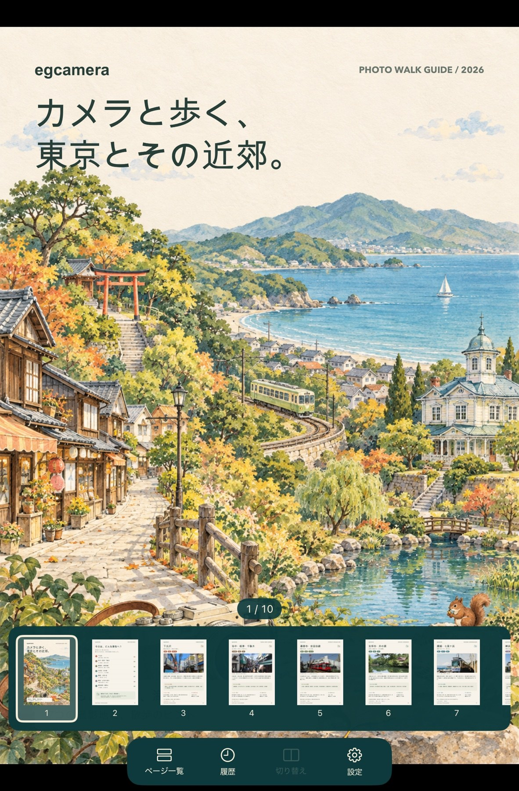

どんなアプリ？
外出先でしおりを確認したり、家で旅先のパンフレットをゆっくり眺めたり。egpamph は、手元の PDF を開き、紙面のレイアウトを保ったまま読むためのアプリです。
縦持ちでは1ページ、横持ちでは1ページまたは2ページを表示。拡大して細部を確認し、一覧で目当てのページへ移動できます。文書ごとに読んでいた位置を記憶するので、開き直したときも続きから読めます。
パンフレットを制作・編集する機能はありません。掲載画面の冊子は閲覧例で、アプリに同梱するコンテンツや配布物ではありません。
画面で見る egpamph


ファイルを選ぶか、最近使った PDF を開いて読み始めます。


下部のサムネイルで全体を見渡し、読みたいページへジャンプ。
3枚の画面写真は2026年10月16日に提供されたものです。撮影時のビルド番号は未確認で、掲載時点の実装と細部が異なる場合があります。
主な機能
1ページでも、2ページでも
横持ちの「切り替え」でシングル／デュアル表示を選べます。デュアル表示も1ページずつ進むため、たとえば「1・2 → 2・3 → 3・4」のように、隣り合うページを見比べられます。偶数・奇数で固定した見開きではありません。
紙面を大きく、すっきりと
ピンチで最大5倍まで拡大し、2本指で表示位置を移動。下向きスワイプで操作バー・ページ番号・矢印を隠せます。UI を隠しても、左右スワイプと画面端のタップで読み進められます。
一覧と履歴で、続きへ戻る
横一列のページ一覧から直接ジャンプ。直近10件の PDF を履歴から開けます。現在ページと横持ちの表示モードは文書ごとに保存し、アプリを終了してから開き直しても復元します。
紙面の Web リンクを開く
埋め込みの Web リンクに加え、印字された URL や Web URL を含む QR コードを端末内で認識します。認識後は該当箇所をタップして外部へ開けます。QR には控えめな枠を表示します。
認識精度は紙面や画質に依存します。外部への遷移は OS の設定に従い、リンクによっては関連アプリが開く場合があります。
基本の使い方
- PDF を選ぶ。開始画面の「PDFファイルを開く」から、iPad 内や iCloud Drive などにある PDF を選びます。「最近使った項目」から以前の文書も開けます。
- 左右に送って読む。左右スワイプ、または画面左右端のタップで1ページずつ移動します。初期設定では左向きのスワイプで次へ進みます。ページの並び順は設定で変更できます。
- 一覧から探す。「ページ一覧」をタップし、サムネイルを選びます。選択後も一覧は残るので続けて選べます。もう一度アイコンを押すか、一覧の外をタップすると閉じます。
- 横持ちで見比べる。iPad を横にし、「切り替え」で2ページ表示へ。縦持ちに戻すと1ページ表示になり、再び横にすると文書ごとの表示モードへ戻ります。
- 別の PDF へ移る。「履歴」で最近の文書を選ぶか、「設定」内の「PDFファイルを開く」を使います。「PDFを閉じる」も設定内にあります。
操作の早見表
| したいこと | 操作 |
|---|---|
| 前後のページへ | 左右スワイプ、または左右端をタップ。端タップは連続入力にも対応します。 |
| 拡大・移動 | ピンチで1〜5倍に拡大し、2本指で移動。拡大中も1本指の左右スワイプはページ送りです。 |
| 操作 UI の表示切替 | 1本指で下にスワイプ。もう一度下スワイプで再表示します。 |
| ページへ直接移動 | 「ページ一覧」のサムネイルをタップ。 |
| シングル／デュアル | 横持ちで「切り替え」。縦持ちでは切り替えできません。 |
| リンクを開く | 認識された Web リンク・印字 URL・QR をタップ。左右端ではページ送りが優先されます。 |
ページ移動・画面回転・表示モード変更では、拡大倍率と表示位置が元に戻ります。一覧が出ているときの紙面タップは、一覧を閉じる操作になります。
利用前に知っておきたいこと
- iPad 専用・iPadOS 27.0 以降。現在のプロトタイプに iPhone 版・Mac 版はありません。
- 閲覧専用です。注釈、PDF 編集、本文検索、全文 OCR、複数文書の同時表示は対象外です。
- パスワード入力が必要な PDF は非対応。暗号化されていても入力なしで開ける PDF は閲覧できます。
- リンクは Web URL が対象。PDF 内のページ移動、メール・電話、Web URL 以外の QR などは非対応です。
- クラウドの PDF は取得通信が必要な場合があります。履歴は元ファイルへの参照で、独立した保存済みライブラリではありません。元ファイルを移動・削除した場合やアクセス権が変わった場合は、選び直しが必要になることがあります。
PDF と閲覧記録の扱い
元の PDF を上書きせず、閲覧中は端末内の一時コピーを使用します。URL・QR の認識も端末内で行い、PDF の内容や閲覧記録を開発者のサーバーへ自動送信しません。
文書名・最近開いた日時・再アクセス用の参照、ページ位置・横持ちモード・送り方向を端末内に保存します。「設定 → 閲覧記録をリセット」で履歴と全 PDF のページ位置・横持ちモードを消去できます。元の PDF と送り方向の設定は残ります。
クラウド上のファイル取得や、タップしたリンク先へのアクセスには外部通信が伴います。詳しくはプライバシーポリシーの egpamph 節をご覧ください。
開発状況・入手について
現在は開発中・非公開です。アプリ本体とソースコードは一般公開・配布していません。公開時期・価格は未定です。機能や画面は今後変更される場合があります。
掲載内容は 時点のプロトタイプ 0.1.5 の実装・仕様に基づきます。自動テストとビルドを確認しながら、実機での動作検証を続けています。大きな PDF の性能、ファイル提供サービスごとの動作、リンク・QR の認識精度は継続確認中です。